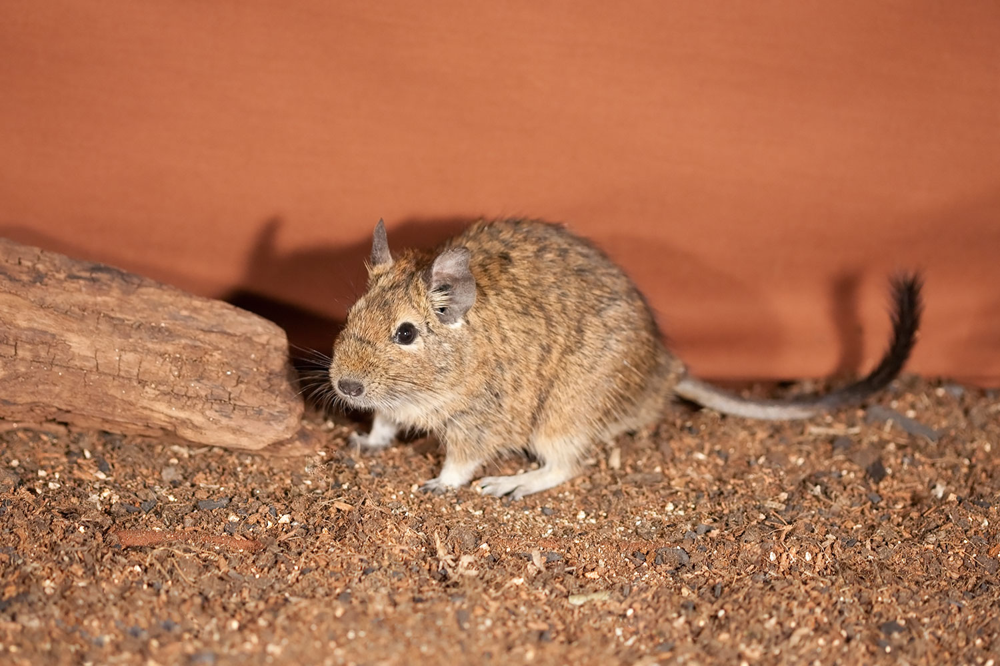
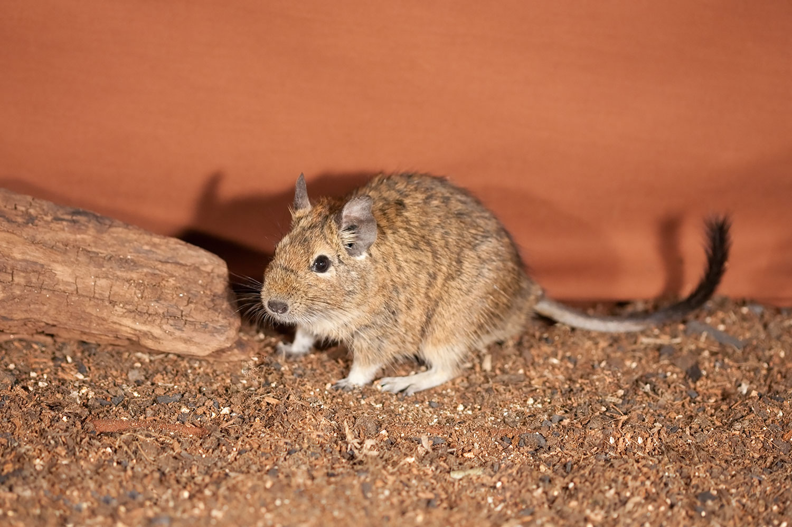
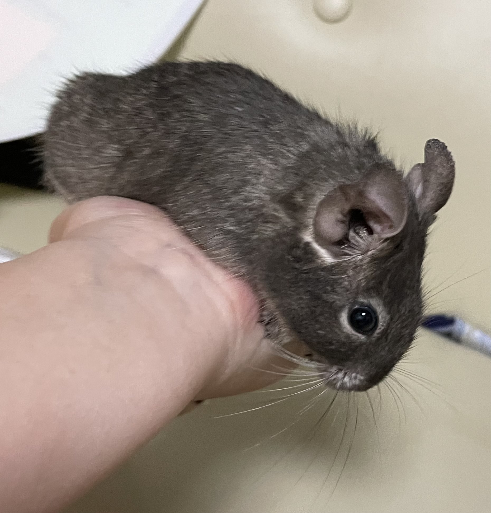
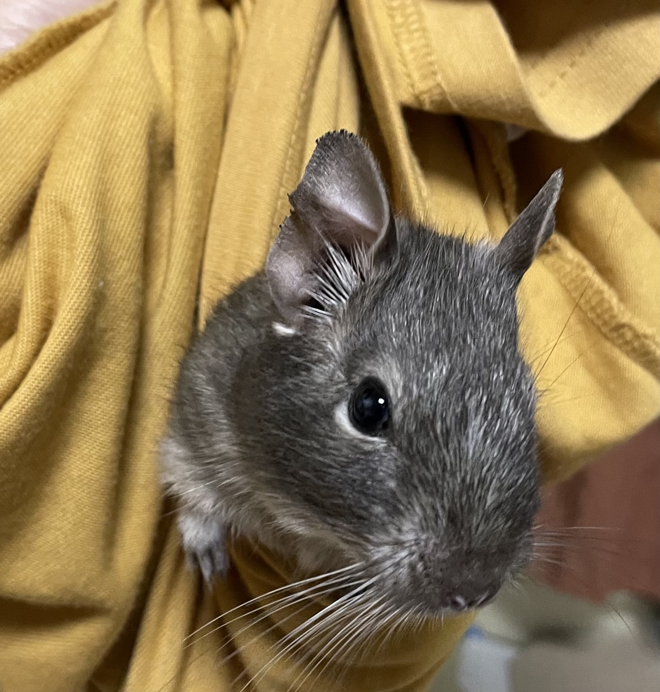
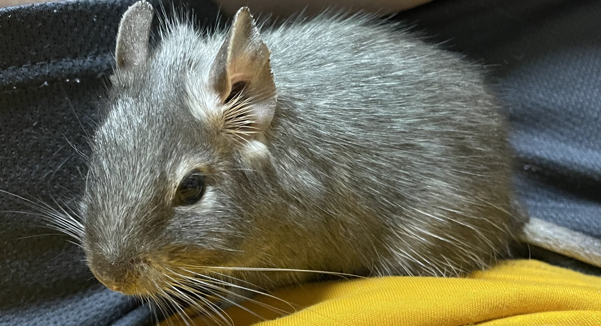

デグーについてのいろいろな情報
デグーの基本


名前 ： デグー（Degu)
学名 ： Octodon degus
所属 ： 齧歯目(げっしもく）/テンジクネズミ亜目/デグー科
分布域 ： チリのアンデス地方西部
生息環境： アンデス山脈の標高1,200～2,000m位までの山地の岩場や断崖など
体長 ： 12～20cm 程度
体重 ： 170～300g 程度
カラー ：アグーチ、ブルー、パイド、サンド、ブラック、ホワイト等
※画像はアグーチカラーのデグー
●昼行性の生き物で、野草やサボテン、樹皮などを主食とする完全草食動物であり、少数のオスと多数のメスからなる群れを形成して暮らしている。
●同じテンジクネズミ亜目のチンチラと同じ巣穴を使用する例も見られる。
チンチラは夜行性であり、交代で巣穴を使っている。
●天敵は猛禽類（もうきんるい）で、野生下の寿命は1年から2年程度といわれるが、飼育下では10以上年生きたという記録が残っている。
●現地では「アンデスの歌うネズミ」と言われるほど様々な鳴き声でコミュニケーションをとっている。
その種類は種類と言われている。
●アグーチが野生下のカラーであり、最もポピュラーである。カラーに記載の順に希少価値が高くなっている。
飼育について

飼育は比較的容易ではあるものの、元来群れで暮らす生き物のため、単独飼育の場合は飼い主とのコミュニケーションが必須。
小鳥やリス用の網目の細かい背の高いケージ、爬虫類用のガラスケージなどで飼育が可能。
例）小動物用ケージ
爬虫類用ケージ
ハムスターのように回し車が必要で、後ろ足が発達しているため上下運動も好む。
木でできたステップやとまり木などがあれば、積極的に齧るため歯の伸びすぎも防止できる。
完全草食性のため穀類は必要なく、チモシー（干し草）、ペレット（チモシーに栄養を添加し固めたもの）のみでよい。
果実なども食べるが、乾燥したものを好む傾向がある。
また糖代謝能力が低いため、糖分を過剰に与えると糖尿病になるため注意が必要。
基本的にトイレを覚える習性がなく、フンは場所を問わず、尿はマーキングの意味合いもこめて複数の箇所で行う。
尿はやや臭いが強いため、底砂として天然木を使用したウサギ用のトイレ砂を利用するとよい。
画像ハンモックで眠るブルーのデグー
●多頭飼いが推奨されているが、オス同士は攻撃しあう傾向にあり、場合によっては致命傷を与えることがある。
●メス同士や親子、異性では多頭飼いが可能といわれているが、相性の差がかなりある。
●安易に頭数を増やしてしまうと相性が合わずケージを増やすことになる場合があるため注意。
●異性では繁殖するため、異性は基本的に生後半年になる前までに離す必要がある。
●エキゾチックアニマル（犬猫や牛・豚・鶏などの産業動物以外の動物）のため、診察可能な病院は必ず先に調べておくこと。
デグー画像集



おまけ（カラー一覧）
デグーのカラー一覧です。ペットショップは撮影禁止のため手書き画像になります。
copyright